Kanji część 5
古
5
stary
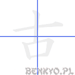
on'yomi
コ
kun'yomi
ふる.い, ふる-, -ふる.す, ふゆ
Komentarz
Patrząc na to kanji nie sposób dostrzec nagrobka, miejsca, gdzie stary człowiek spoczywa po śmierci.
Przykładowe wyrażenia
| kanji | hiragana | znaczenie |
|---|---|---|
| 古い | ふるい | stary (o przedmiocie) |
| 稽古 | けいこ | trening |
| 古典 | こてん | klasyka (literatura) |
| 古里 | ふるさと | rodzinne miasto, "stare śmieci" |
| 中古 | ちゅうこ | rzecz używana, z drugiej ręki |
耳
6
ucho
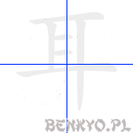
on'yomi
ジ
kun'yomi
みみ, がみ
Komentarz
Pomimo, iż wygląda całkiem jak oko 目, to sposób pisania jest inny. Porównaj koniecznie.
Przykładowe wyrażenia
| kanji | hiragana | znaczenie |
|---|---|---|
| 耳 | みみ | ucho |
| 耳鼻科 | じびか | laryngologia |
| 初耳 | はつみみ | po raz pierwszy zasłyszana informacja |
寸
3
miara
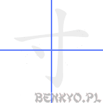
on'yomi
スン
kun'yomi
す, みき
Komentarz
Jest to dawna jednostka długości sun równa dziesiątej części stopy (około 3cm). Czy widzisz w tym znaku "dziesiątkę" 十 oraz małą kroplę? Jako klucz to kanji przyjmie jeszcze jedno znaczenie: klej.
Przykładowe wyrażenia
| kanji | hiragana | znaczenie |
|---|---|---|
| 寸法 | すんぽう | wymiar, rozmiar |
村
7
miasteczko
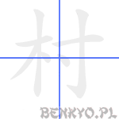
on'yomi
ソン
kun'yomi
むら, え, むた, ら
Komentarz
Możemy wyobrazić sobie stary gród (Biskupin?), którego mury zbudowane były z drzew (木) zespojonych ze sobą mocnym klejem (寸).
Przykładowe wyrażenia
| kanji | hiragana | znaczenie |
|---|---|---|
| 村 | むら | wieś |
丁
2
ulica; dzielnica; parzysty numer; grzeczność
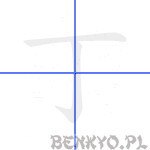
on'yomi
チョウ, テイ, チン, トウ, チ
kun'yomi
ひのと
Komentarz
Czy widzisz ten znak drogowy z nazwą ulicy, na której mieszkasz?
Przykładowe wyrażenia
| kanji | hiragana | znaczenie |
|---|---|---|
| ~丁目 | ~ちょうめ | oznaczenie numeru dzielnicy |
| 丁寧 | ていねい | grzeczny , dobrze wychowany |
| 庖丁 | ほうちょう | nóż kuchenny |
町
7
miasto
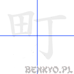
on'yomi
チョウ
kun'yomi
まち
Komentarz
Tu mamy pole ryżowe (田) z ulicą (丁) obok. W Japonii jest tak mało miejsca, że takie małe poletka ryżowe w środku miasta nie są wcale rzadkością.
Przykładowe wyrażenia
| kanji | hiragana | znaczenie |
|---|---|---|
| 町 | まち | miasto |
| ～町 | ～ちょう | dzielnica |
| 下町 | したまち | stara, "niższa" część miasta |
匕
2
łyżka
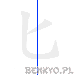
on'yomi
ヒ
kun'yomi
さじ, さじのひ
Komentarz
Zwróć uwagę na różnicę tego znaku z siódemką (七). Jako klucz ten znak przyjmie również znaczenie: człowiek siedzący na ziemi (wygląda na to, że medytuje).
Przykładowe wyrażenia
| kanji | hiragana | znaczenie |
|---|---|---|
| 匕 | さじ | łyżka |
化
4
zmiana, wpływ
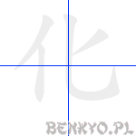
on'yomi
カ, ケ
kun'yomi
ば.ける, ば.かす, ふ.ける, け.する
Komentarz
Człowiek z łyżką. Stara się on zmienić jej kształt wpływając na nią jedynie swoją wolą. No cóż, pozostaje życzyć mu powodzenia.
To kanji, gdy występuje w wyrazie jako ostanie, często przyjmuje taki sens, jak w języku polskim końcówka "-izacja".
To kanji, gdy występuje w wyrazie jako ostanie, często przyjmuje taki sens, jak w języku polskim końcówka "-izacja".
Przykładowe wyrażenia
| kanji | hiragana | znaczenie |
|---|---|---|
| 文化 | ぶんか | kultura, cywilizacja |
| 化学 | かがく | chemia |
| 化粧 | けしょう | makijaż |
| 強化 | きょうか | wzmocnienie, nasilenie |
| ~化 | ~か | ~izacja |
| 消化 | しょうか | trawienie |
花
7
kwiat
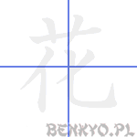
on'yomi
カ, ケ
kun'yomi
はな, わ
Komentarz
Na początek powiemy o górnej części tego znaku. Kreska pozioma i dwie przecinające ją pionowe to klucz oznaczający trawę lub właśnie kwiat. Na dole mamy zmianę 化. Wyobraź sobie trawnik, który zmienia się w łąkę pełną kwiatów?
Przykładowe wyrażenia
| kanji | hiragana | znaczenie |
|---|---|---|
| 花 | はな | kwiat |
| 花瓶 | かびん | wazon |
| 花見 | はなみ | hanami-oglądanie kwitnących kwiatów wiśni |
| 花嫁 | はなよめ | panna młoda |
| 花火 | はなび | fajerwerki, sztuczne ognie |
| 生け花 | いけばな | ikebana, sztuka aranżacji kwiatów, kompozycja kwiatowa |
| 生花 | いけばな | ikebana, sztuka aranżacji kwiatów |
全
6
całość; wszystko
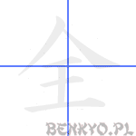
on'yomi
ゼン
kun'yomi
まった.く, すべ.て, たけ, まさ
Komentarz
Górna część tego znaku to klucz, którego znaczenie jest dokładnie takie, na jakie wygląda: parasol. Tak więc mamy tu króla 王, który w strugach deszczu rozmyśla w samotności, przytłoczony myślą, że wszystko jest na jego głowie, choć nad głową ma jedynie parasol.
Przykładowe wyrażenia
| kanji | hiragana | znaczenie |
|---|---|---|
| 全部 | ぜんぶ | wszystko, całość |
| 安全 | あんぜん | bezpieczeństwo |
| 完全 | かんぜん | doskonałość |
| 全く | まったく | kompletnie, zupełnie |
| 全て | すべて | w całości, wszystko |
| 全員 | ぜんいん | wszyscy członkowie, cała załoga |
| 全国 | ぜんこく | ogólnokrajowy, cały kraj |
| 全然 | ぜんぜん | wcale, ani trochę, kompletnie (+zaprzeczenie) |
金
8
złoto; pieniądz
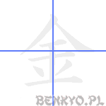
on'yomi
キン, コン, ゴン
kun'yomi
かね, かな-, -がね, かん, きむ, こ, この, ん
Komentarz
Widzisz tu dwa promyczki oraz kanji "wszystko" 全? Pamiętaj, że nie wszystko złoto, co się świeci!
Przykładowe wyrażenia
| kanji | hiragana | znaczenie |
|---|---|---|
| お金 | おかね | pieniądze |
| 金曜日 | きんようび | piątek |
| 税金 | ぜいきん | podatek |
| 料金 | りょうきん | opłata |
| お・金持ち | かねもち/おかねもち | bogacz |
| 金属 | きんぞく | metal |
母
5
mama
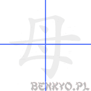
on'yomi
ボ
kun'yomi
はは, も
Komentarz
Gdyby to kanji odwrócić o 90 stopni, byłoby dużo łatwiej. Przecież to kobiece piersi, symbol matki. Zwróć uwagę na kolejność stawiania kresek!
Przykładowe wyrażenia
| kanji | hiragana | znaczenie |
|---|---|---|
| お母さん | おかあさん | matka |
| 母 | はは | własna matka |
| 伯母さん/叔母さん | おばさん | ciotka |
| 祖母 | そぼ | babcia |
父
4
tata
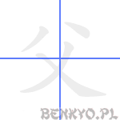
on'yomi
フ
kun'yomi
ちち
Komentarz
Przykładowe wyrażenia
| kanji | hiragana | znaczenie |
|---|---|---|
| お父さん | おとうさん | ojciec (zazwyczaj o czyimś) |
| 伯父/叔父・さん | おじ・さん | wujek |
| 父 | ちち | własny ojciec |
| 祖父 | そふ | dziadek |
交
6
mieszać; skrzyżowanie
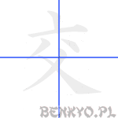
on'yomi
コウ
kun'yomi
まじ.わる, まじ.える, ま.じる, まじ.る, ま.ざる, ま.ぜる, -か.う, か.わす, かわ.す, こもごも, かた
Komentarz
Tata w berecie (tak, tak - górna część tego znaku to klucz o znaczeniu "beret"!). Wyobraź sobie swojego tatę stojącego w berecie na środku ogromnego skrzyżowania, próbującego doprowadzić do porządku mieszające się w korku samochody. Jeżeli już masz przed oczami ten obraz, to możesz być pewien, że tego znaku już nie zapomnisz.
Przykładowe wyrażenia
| kanji | hiragana | znaczenie |
|---|---|---|
| 交差点 | こうさてん | skrzyżowanie |
| 交番 | こうばん | policyjna budka |
| 交通 | こうつう | komunikacja, ruch uliczny |
| 外交 | がいこう | dyplomacja |
| 交ざる | まざる | mieszać się, łączyć się |
| 交ぜる | まぜる | mieszać |
| 交換 | こうかん | wymiana |
| 交流 | こうりゅう | prąd zmienny |
校
10
szkoła
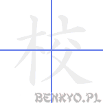
on'yomi
コウ, キョウ
kun'yomi
めん
Komentarz
Tu widzimy dumnego tatę, którego synek poszedł pierwszy raz do szkoły. Teraz czeka on na synka, schowany za drzewem, chcąc z ukrycia zobaczyć, czy syn dzielnie przetrwał pierwsze lekcje. Synek jednak od razu zauważył tatę - zza drzewa po charakterystycznym bereciku wystającym zza drzewa.
Przykładowe wyrażenia
| kanji | hiragana | znaczenie |
|---|---|---|
| 学校 | がっこう | szkoła |
| 校長 | こうちょう | dyrektor |
| 高校/高等学校 | こうこう/こうとうがっこう | szkoła ogólnokształcąca/szkoła średnia |
| 高校生 | こうこうせい | uczeń liceum, licealista |
| 小学校 | しょうがっこう | szkoła podstawowa |
| 中学校 | ちゅうがっこう | gimnazjum |
弓
3
łuk
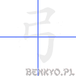
on'yomi
キュウ
kun'yomi
ゆみ, こ, ゆ
Komentarz
Zarówno kanji, jak i klucz używany w innych kanji ma znaczenie łuk. I to nie byle jaki - zawodowy!
Przykładowe wyrażenia
| kanji | hiragana | znaczenie |
|---|---|---|
| 弓 | ゆみ | łuk |
今
4
teraz
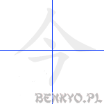
on'yomi
コン, キン
kun'yomi
いま, な
Komentarz
Wygląda jak ラ pod parasolem!. W takim razie teraz gra słowna: "Te, ra z parasolem!"
Przykładowe wyrażenia
| kanji | hiragana | znaczenie |
|---|---|---|
| 今 | いま | teraz |
| 今月 | こんげつ | ten miesiąc |
| 今週 | こんしゅう | ten tydzień |
| 今朝 | けさ | dzisiaj rano |
| 今日 | きょう | dzisiaj |
| 今年 | ことし | ten rok (obecny) |
| 今晩 | こんばん | dziś wieczorem |
| 今度 | こんど | teraz, następnym razem |
| 今夜 | こんや | dziś wieczorem, dziś w nocy |
牛
4
krowa
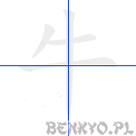
on'yomi
ギュウ
kun'yomi
うし, うじ, ご
Komentarz
Widzimy tu z góry krowę z jednym tylko rogiem.
Przykładowe wyrażenia
| kanji | hiragana | znaczenie |
|---|---|---|
| 牛肉 | ぎゅうにく | wołowina |
| 牛乳 | ぎゅうにゅう | mleko |
| 牛 | うし | bydło, krowa, |
午
4
południe
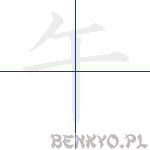
on'yomi
ゴ
kun'yomi
うま
Komentarz
Górna część tego znaku to człowiek leżący. W tym znaku położył się na dziesięciominutową 十 drzemkę po południowym posiłku.
Zwróć uwagę na różnicę pomiędzy tym znakiem a krową 牛. Jako klucz odróżniający od krowy przyjmuje on znaczenie koń.
Zwróć uwagę na różnicę pomiędzy tym znakiem a krową 牛. Jako klucz odróżniający od krowy przyjmuje on znaczenie koń.
Przykładowe wyrażenia
| kanji | hiragana | znaczenie |
|---|---|---|
| 午後 | ごご | popołudniu |
| 午前 | ごぜん | przed południem |
| 午前中 | ごぜんちゅう | rano, do południa |
年
6
rok
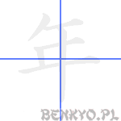
on'yomi
ネン
kun'yomi
とし, ね
Komentarz
Przykładowe wyrażenia
| kanji | hiragana | znaczenie |
|---|---|---|
| ～年 | ～ねん | ～ lat, rok ～ |
| さ来年 | さらいねん | rok po przyszłym roku |
| 去年 | きょねん | ubiegły rok |
| 今年 | ことし | ten rok (obecny) |
| 年 | とし | rok, wiek (ile ktoś ma lat) |
| 毎年 | まいねん/まいとし | co roku |
| 万年筆 | まんねんひつ | wieczne pióro |
| 来年 | らいねん | następny rok |
| 生年月日 | せいねんがっぴ | data urodzin |
| 一年生 | いちねんせい | pierwszoroczniak |
兄
5
starszy brat
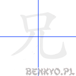
on'yomi
ケイ, キョウ
kun'yomi
あに, え, せ, よし
Komentarz
W przeciwieństwie do języka polskiego, w japońskim młodszy brat to zupełnie inne słowo od tego, którym określa się starszego brata. Jeżeli masz starszego brata, być może czasem wyobrażasz jego karykaturę, która chodzi (ludzkie nogi na dole) i wrzeszczy (buzia na górze).
Przykładowe wyrażenia
| kanji | hiragana | znaczenie |
|---|---|---|
| お兄さん | おにいさん | starszy brat |
| 兄 | あに | starszy brat |
| 兄弟 | きょうだい | rodzeństwo |
| 従兄弟 | いとこ | kuzyn |
台
5
podstawa, piedestał; stojak; klasyfikator maszyn
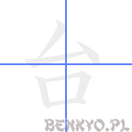
on'yomi
ダイ, タイ
kun'yomi
うてな, われ, つかさ
Komentarz
Łokieć na górze i buzia na dole.
Przykładowe wyrażenia
| kanji | hiragana | znaczenie |
|---|---|---|
| ～台 | ～だい | licznik pojazdów/maszyn |
| 台所 | だいどころ | kuchnia |
| 台風 | たいふう | tajfun |
| 灯台 | とうだい | latarnia (morska) |
| 土台 | どだい | baza, fundament, podstawa |
回
6
okręcać, kręcić; klasyfikator powtórzeń (ile razy)
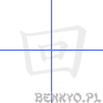
on'yomi
カイ, エ
kun'yomi
まわ.る, -まわ.る, -まわ.り, まわ.す, -まわ.す, まわ.し-, -まわ.し, もとお.る, か.える
Komentarz
Zamiast myśleć o kluczach (buzia), wyobraźmy sobie raczej stadion, po którym biegają w kółko zawodnicy. Ile razy muszą jeszcze przebiec do końca wyścigu?
Przykładowe wyrażenia
| kanji | hiragana | znaczenie |
|---|---|---|
| ～回 | ～かい | ～ razy (klasyfikator ilości zdarzeń) |
| 回る | まわる | obracać się |
| 回す | まわす | obracać, okręcać |
| 回転 | かいてん | obrót, obroty |
| 回答 | かいとう | odpowiedź |
| 回復 | かいふく | wyzdrowienie, wydobrzenie |
| 今回 | こんかい | tym razem, teraz |
| 一回 | いっかい | jeden raz |
多
6
dużo, często
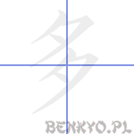
on'yomi
タ
kun'yomi
おお.い, まさ.に, まさ.る
Komentarz
Pamiętasz znak na "wieczór": 夕? Tak, to ten księżyc częściowo zasłonięty chmurami. Tu mamy dwa takie księżyce. Dwa księżyce jednocześnie? To chyba o jeden za dużo?
Przykładowe wyrażenia
| kanji | hiragana | znaczenie |
|---|---|---|
| 多い | おおい | dużo, liczny |
| 多少 | たしょう | mniej więcej |
| 多分 | たぶん | prawdopodobnie, być może |
Odwiedzający tę stronę najczęściej szukali:
kwiaty po japońsku (58), kwiat po japońsku (56), król po japońsku (21)Poprzednia część tej lekcji: Dialog: mogę pożyczyć?